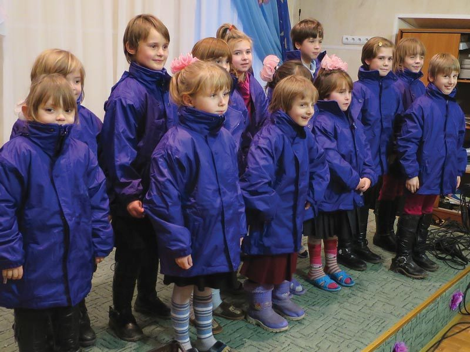
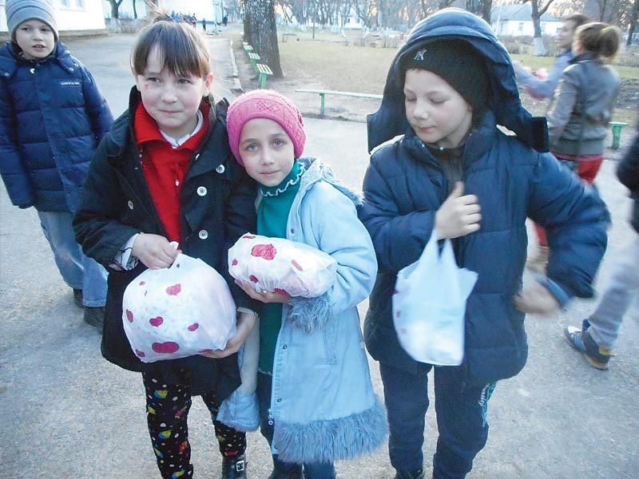
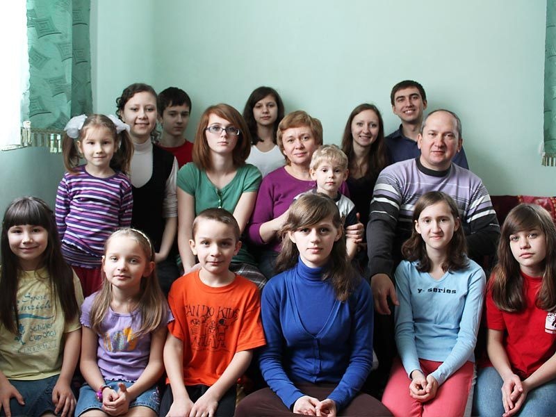
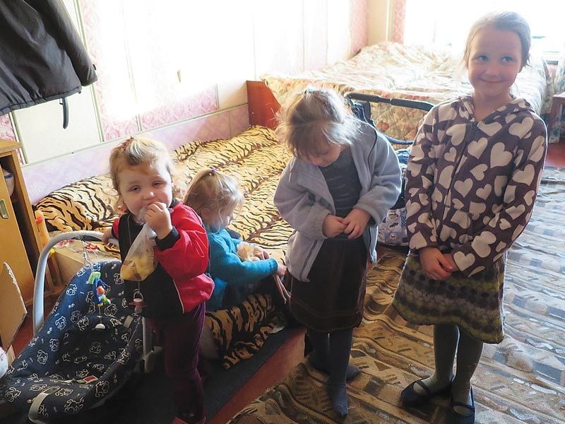
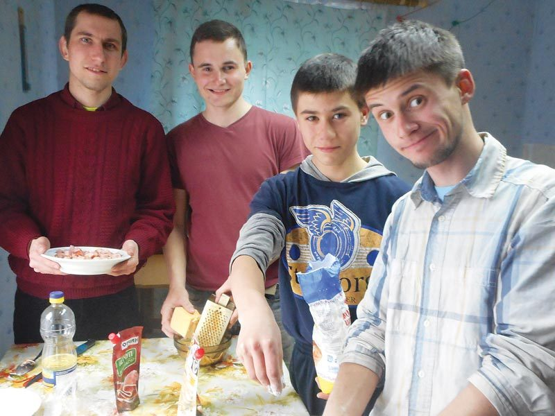
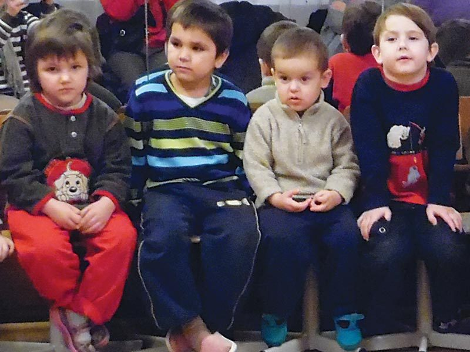

Hope Now has cared for children in the Cherkassy region for many years. Some have lost their parents; others have been taken out of homes where they were not safe. However they come to us, we want the same thing for each of them: somewhere safe, someone who loves them, and the chance to discover how much God loves them too.
Internats (orphanages)
Hope Now supports several internats (orphanages) in the Cherkassy region. Each internat Director is responsible for raising support not covered by the authorities. Internats can be for children or for older people with learning difficulties.
State money rarely stretches far enough, so each Director has to find the rest — for food, clothes, heating, repairs. Hope Now comes alongside them, helping with what's needed and visiting often, so the children know someone is in their corner.

Rescue Shelter
The Cherkassy Rescue Shelter takes children aged from 4 to 18 years. Often from abusing parents, or sometimes found on the street, these children need immediate care. Hope Now supports this centre and regularly visits the shelter with treats for the children.
It's a place of safety at the worst moment — somewhere a frightened child can be warm, fed and looked after while the authorities work out what happens next. We visit with small treats and a bit of fun, because every one of these children matters.


“A Father to the fatherless, a defender of widows, is God in His holy dwelling.”
Psalm 68:5House of Babies, Cherkassy
This is home to around 80 children, many of whom have severe disabilities. The 240 staff work round the clock to offer much-needed care, and Hope Now has been able to support the centre in many ways.
Caring for so many children with such serious needs is hard, round-the-clock work. By standing with the staff and the centre, Hope Now helps make sure these little ones are held, comforted and treated with dignity.

Pre-independence Homes
Pre-independence homes for boys and girls leaving the internats, or perhaps from very poor families, give the young people an opportunity to learn how to live an independent life. Overseen by our Childcare Officer, they are supported by Hope Now.
Leaving an institution at eighteen with no family behind you is a frightening prospect. In these homes young people learn the ordinary skills of standing on their own feet — cooking, managing money, running a home — with a Childcare Officer who knows each of them by name and points them to the Bible along the way.

Foster Parents
Children are placed in Christian families to be loved and cared for.
Our foster parents take children in and raise them alongside their own. For a child who has only ever known upheaval, the steady rhythm of an ordinary, loving home is everything.

Why it matters
How you can help
Your support helps us stand with these children — behind the internats and the Rescue Shelter, alongside the House of Babies, and beside young people taking their first steps on their own. You can also sponsor a child or help a foster family directly.